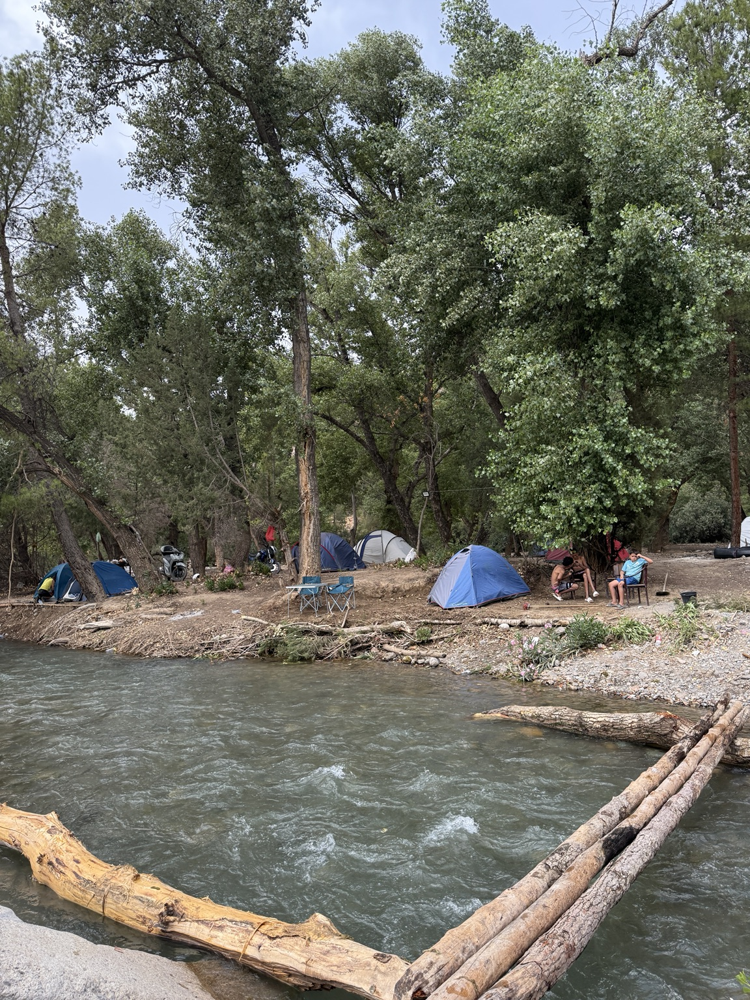
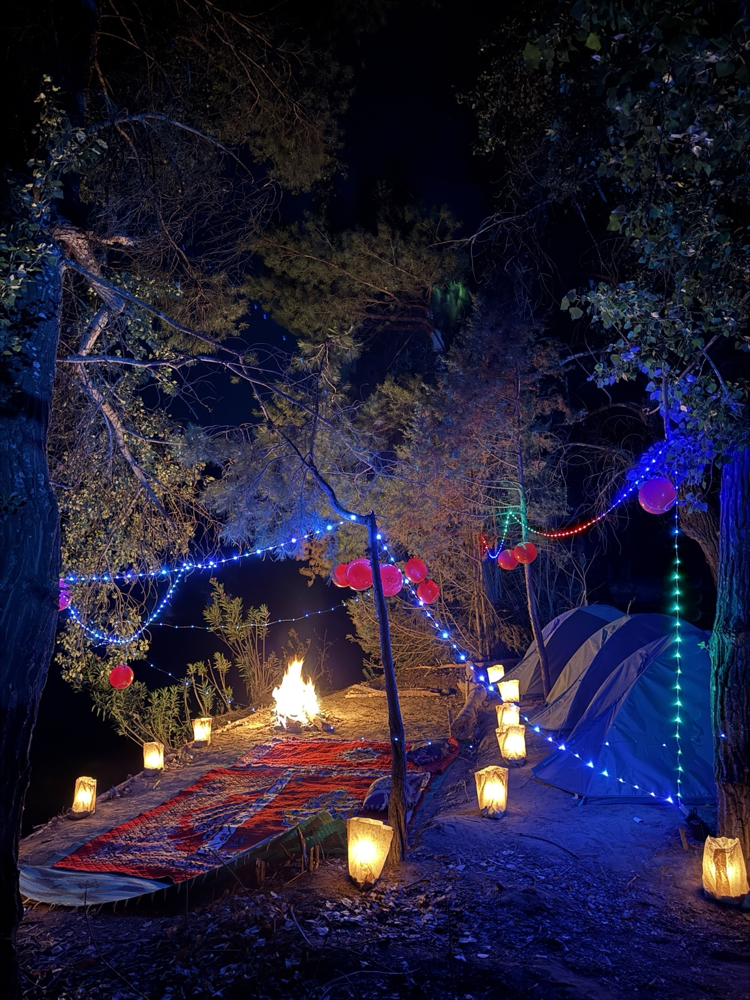
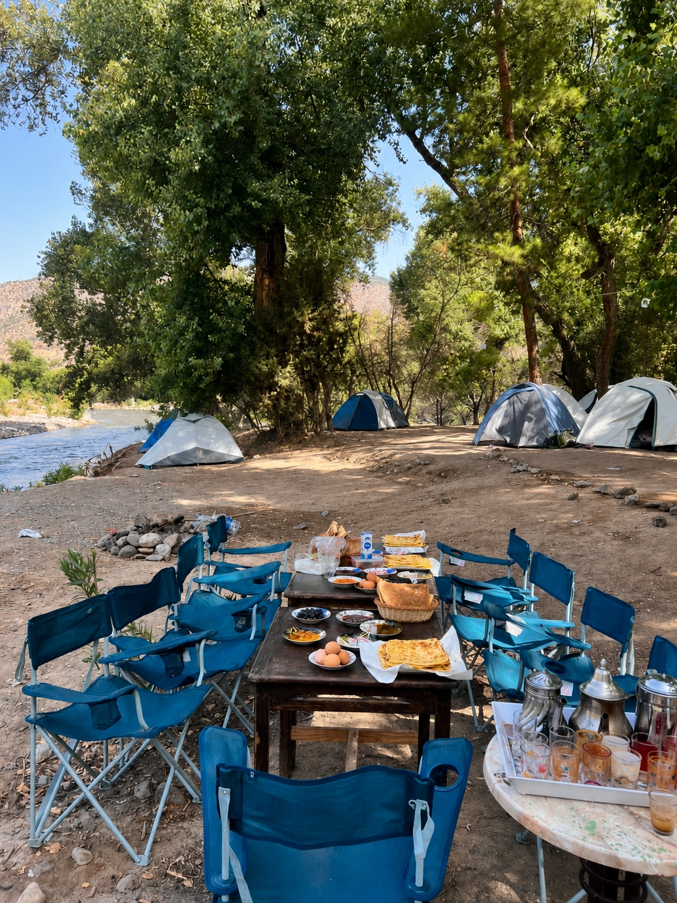
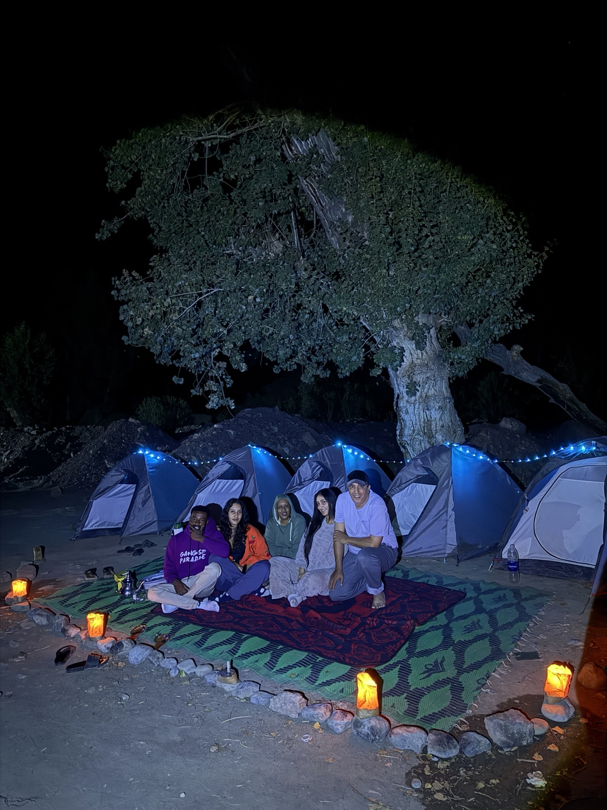
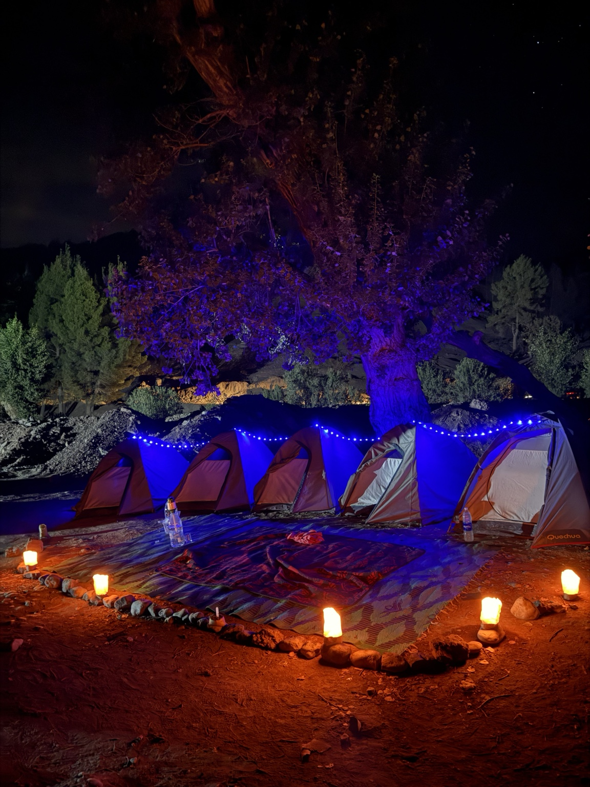
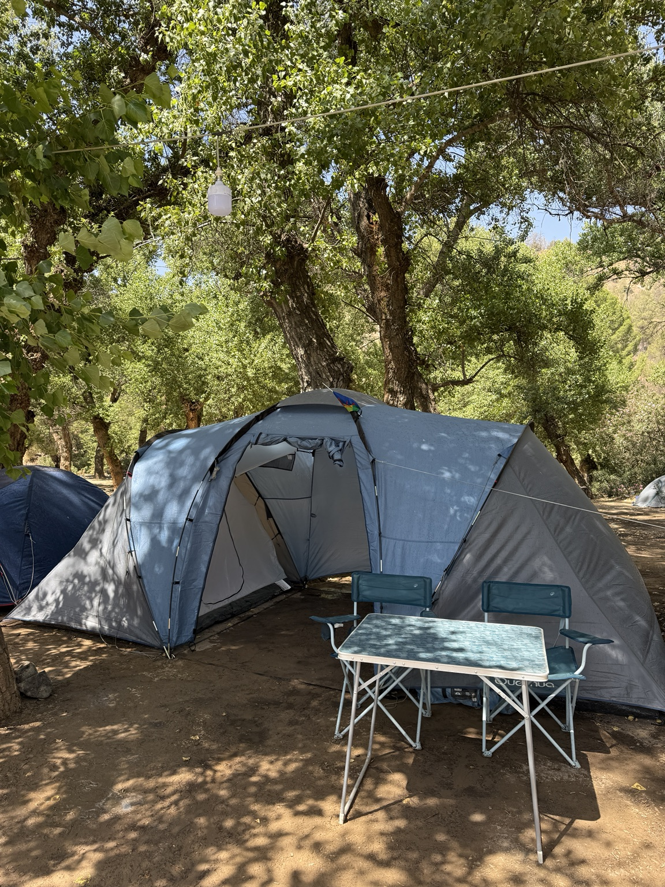
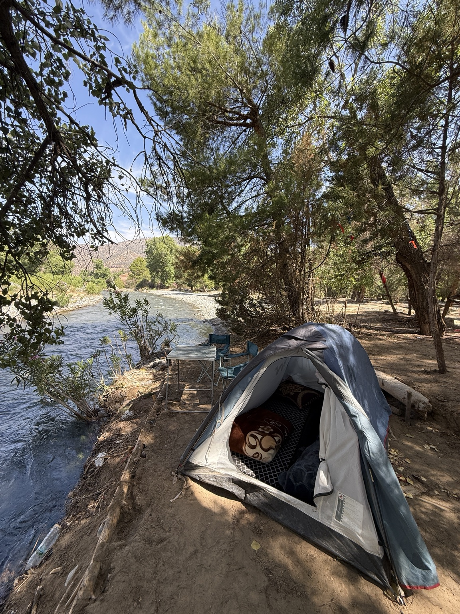

Au bord de la rivière
Profitez de la fraîcheur de l’oued et de l’ombre des arbres.
Au bord de l’oued Ahansal, vivez une parenthèse authentique entre forêt, montagnes et soirées autour du camp.



Des journées au bord de la rivière et des nuits sous les arbres : découvrez l’ambiance du bivouac dans l’Atlas marocain.

Profitez de la fraîcheur de l’oued et de l’ombre des arbres.

Partagez des moments uniques sous un ciel étoilé.

Des tentes au milieu de la nature et des paysages de montagne.

Contactez-nous pour connaître les possibilités de camping, les disponibilités et les équipements inclus selon votre séjour.
Tarif sur demandeÉquipements et repas : à confirmer lors de la réservation.
Demander une réservation ↗15 photos du camping : des nuits illuminées aux matinées près de la rivière.
Organisons ensemble votre séjour camping à Imsfrane.
Demander une réservation ↗